01 / Coverage
Distributed purification
Explore coverage across multiple areas instead of relying on a single unit.
AERA · Air purification and zone management system for commercial spaces
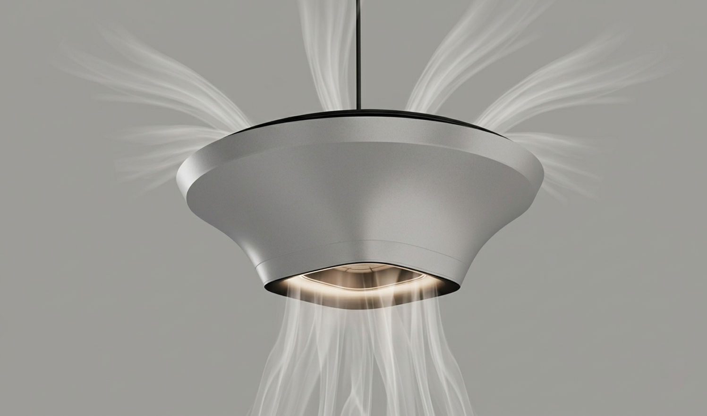
AERA explores air purification as a connected system rather than an individual appliance. It combines ceiling-integrated purification units with a digital interface to consider how air quality can be monitored and managed across commercial spaces.
The project connects four considerations that are often treated separately:
AERA proposes an integrated approach to commercial air purification, bringing distributed hardware and digital monitoring into one system.
These are anticipated design benefits, not measured or validated outcomes.
Explore coverage across multiple areas instead of relying on a single unit.
Reduce dependence on floor-standing equipment through a ceiling-integrated approach.
Make zone-level information easier to understand through a digital interface.
Give system upkeep a defined place within the overall experience.
Commercial environments contain different occupancy patterns, spatial constraints, and air-quality needs. The challenge was to explore how purification could work across these conditions rather than treating each unit as an isolated product.

Movement-heavy areas and longer-stay spaces can call for different considerations when planning purification.
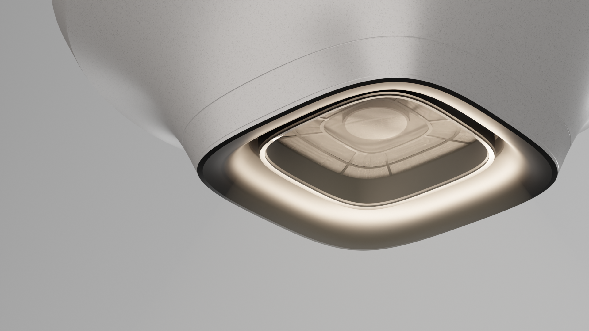
Ceiling infrastructure, product placement, and service access shape how a distributed system can be integrated.
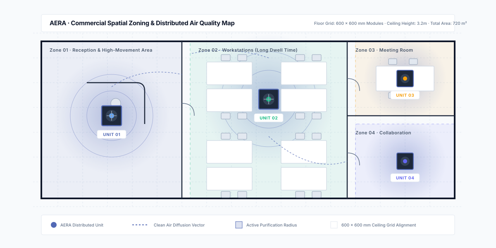
Research explored how people occupy commercial spaces and how a distributed purification system could respond to their different needs. These observations informed the relationship between unit placement, spatial planning, and monitoring.
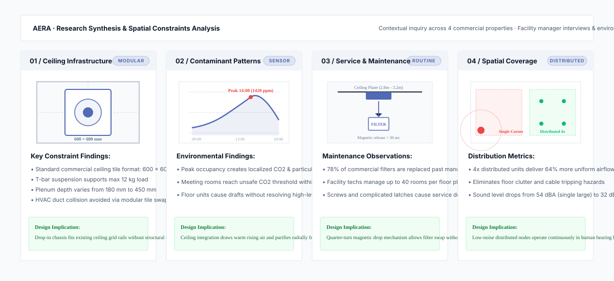
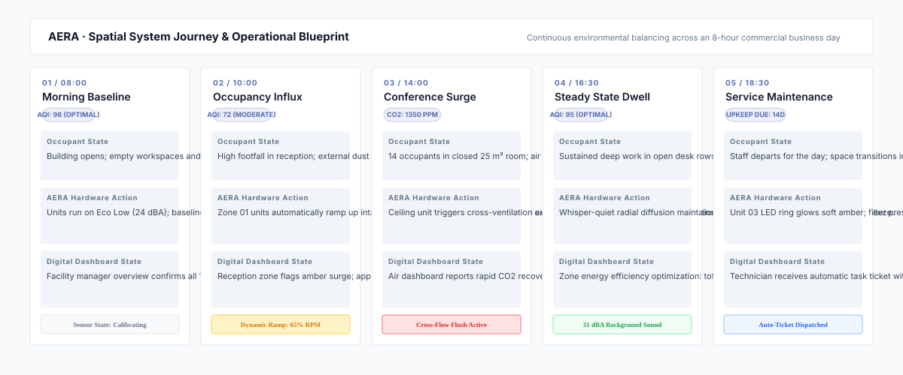
The opportunity was to connect air purification with spatial planning and digital management. Four areas guided the development of the system.
Explore purification across different commercial areas rather than one isolated point.
Consider how the product could fit into existing commercial environments.
Develop the physical concept around its intended function and spatial context.
Consider access and maintenance alongside form and installation.
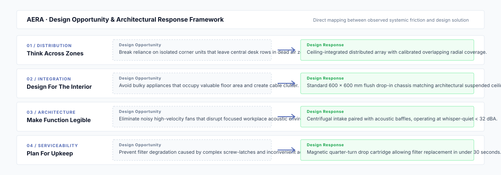
I explored a ceiling-integrated form that could preserve usable floor space while becoming part of the commercial interior. The process focused on the relationship between product form, internal architecture, and access for servicing.

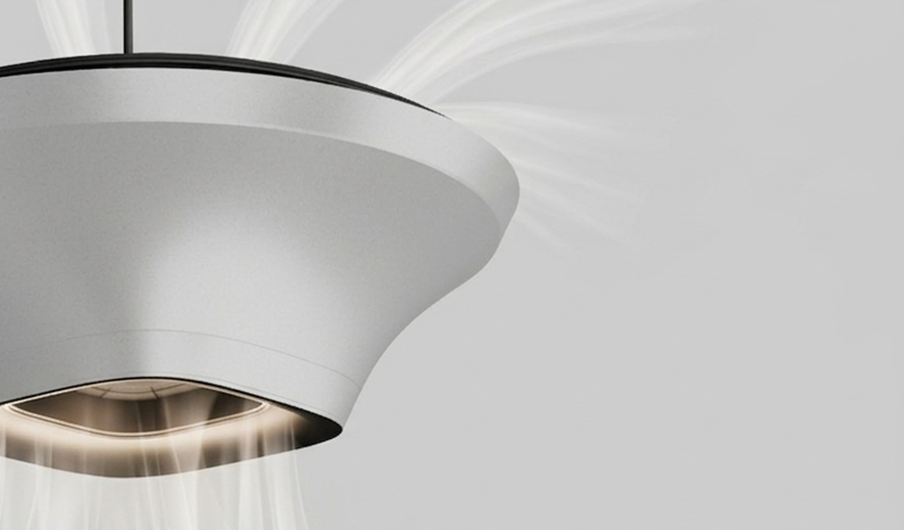
Explore how the product reads as part of the ceiling rather than a separate floor-standing appliance.
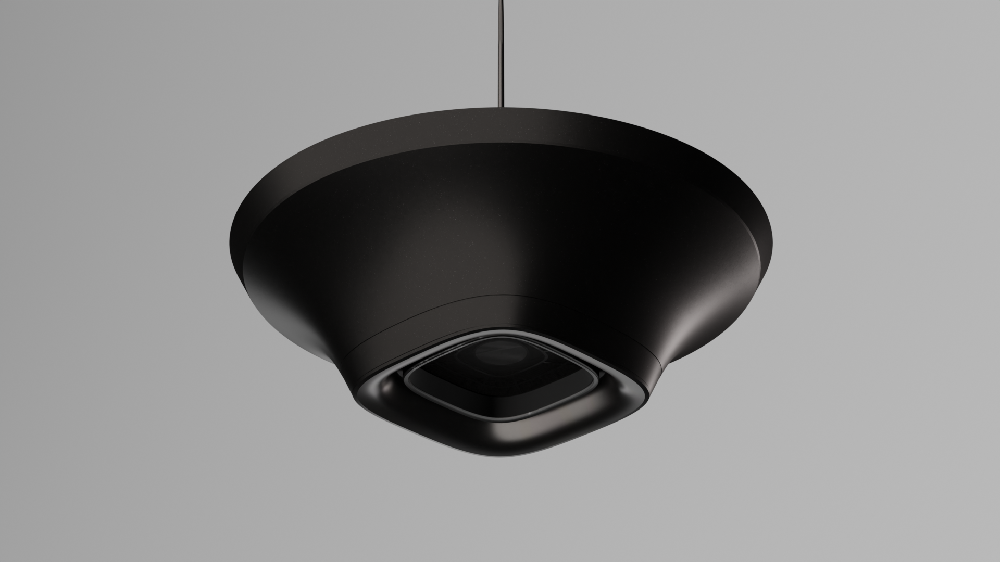
Use the final material or finish study here if it represents the actual design exploration.
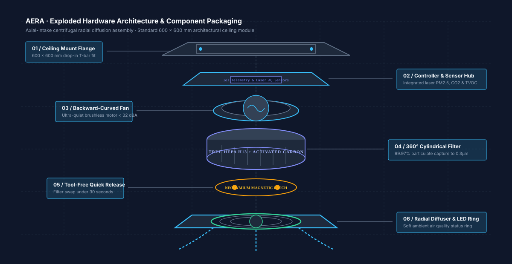
Louvered radial geometry disperses filtered air smoothly without creating disruptive drafts.
Magnetic quarter-turn drop mechanism allows maintenance staff to swap filters in under 30 seconds.
The digital interface extends the system beyond the physical unit, organising information around air quality, spatial zones, and maintenance. Its structure helps users understand the wider system rather than viewing each unit in isolation.
Understand the environment through a dedicated air-quality monitoring telemetry view.
Organise information around spatial areas for a clearer view of the commercial floorplate.
Give maintenance-related information and proactive filter health tracking a dedicated space.
AERA brings the ceiling-integrated product, spatial zones, and digital interface into one system concept. The aim is to make the relationship between the physical product and its wider environment easier to understand and manage.
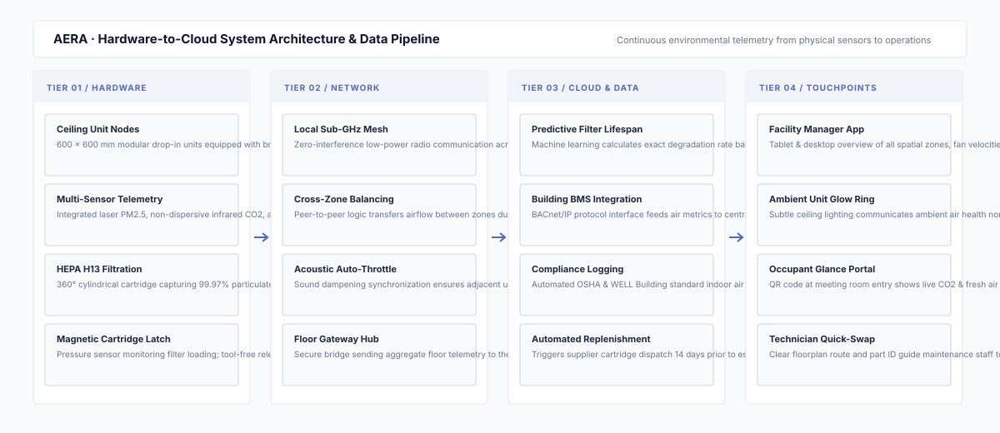
AERA explores how industrial design can extend from an individual object to a system shaped by its environment, operation, and maintenance. The project brought physical product design and digital interaction together around a shared commercial air-quality challenge.
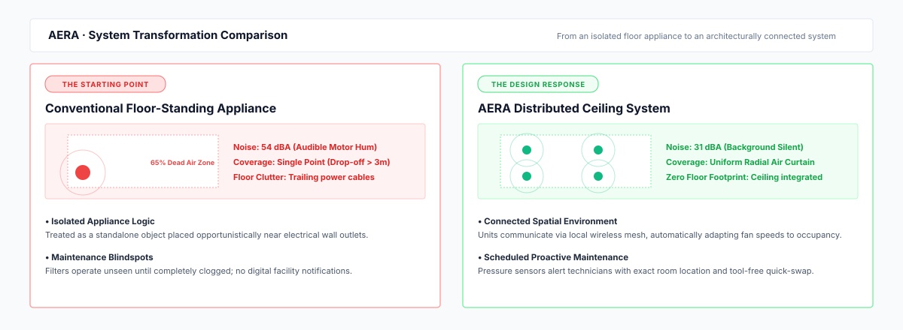
Consider how a product works within the space around it.
Treat maintenance as a product-design consideration, not an afterthought.
Use the interface to extend the value of the physical product.
Consider how multiple units and user touchpoints work together.
Automotive Design · Mobility Systems · Service Experience
Interaction Design · UI/UX Design · Enterprise Software
Product Design · Design Systems · Full-Stack Development